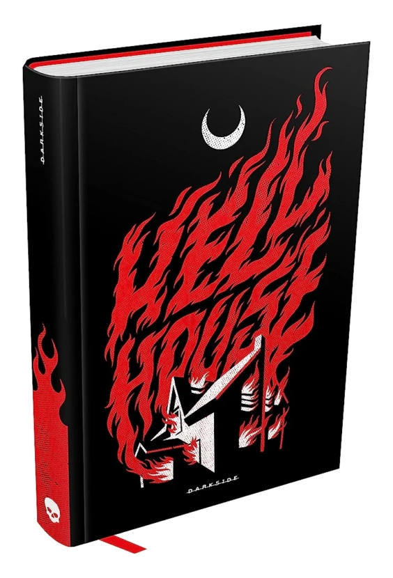

Hell house - Richard Matheson
Sinopse
A Mansão Belasco desponta imponente no horizonte. Poderia uma casa concentrar uma malignidade tão violenta a ponto de destruir seus habitantes com suas chamas? Há décadas, a casa desafia ― e vence ― todos os que ousam perscrutar seus segredos. Mas essa história está prestes a mudar.
Convocados por um milionário que, à beira da morte, quer respostas sobre o que o espera no além, quatro membros de uma equipe investigativa rumam para a diabólica mansão, dispostos a desvendar seus mistérios e derrotar, de uma vez por todas, as presenças malignas que assombram o local. No entanto, como descobrem da maneira mais chocante possível, é preciso mais do que coragem para encarar um mal tão antigo e potente.